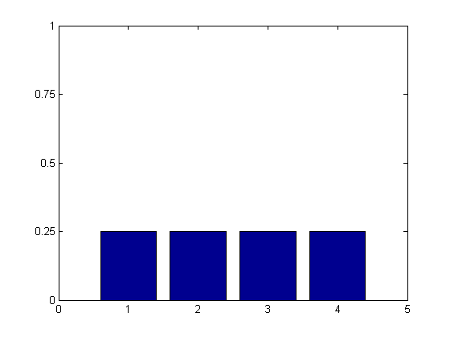
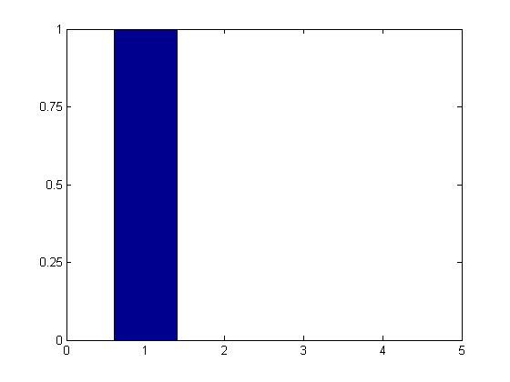

%Some probability distributions on X = {1,2,3,4} First a uniform %distribution p(x = k) = 1/4. Second a degenerate distribution p(x) = 1 if %x=1 and 0 otherwise. %Written by Matthew Dunham function discreteProbDistroFig close all; plotHist(1:4); printPmtkFigure('unifHist'); plotHist(1); printPmtkFigure('deltaHist'); function plotHist(locs) figure; sCounts = (1/length(locs))*ones(1,length(locs)); bar(locs,sCounts); axis([0 5 0 1]); set(gca,'XTick',0:5); set(gca,'YTick',0:0.25:1); end end 